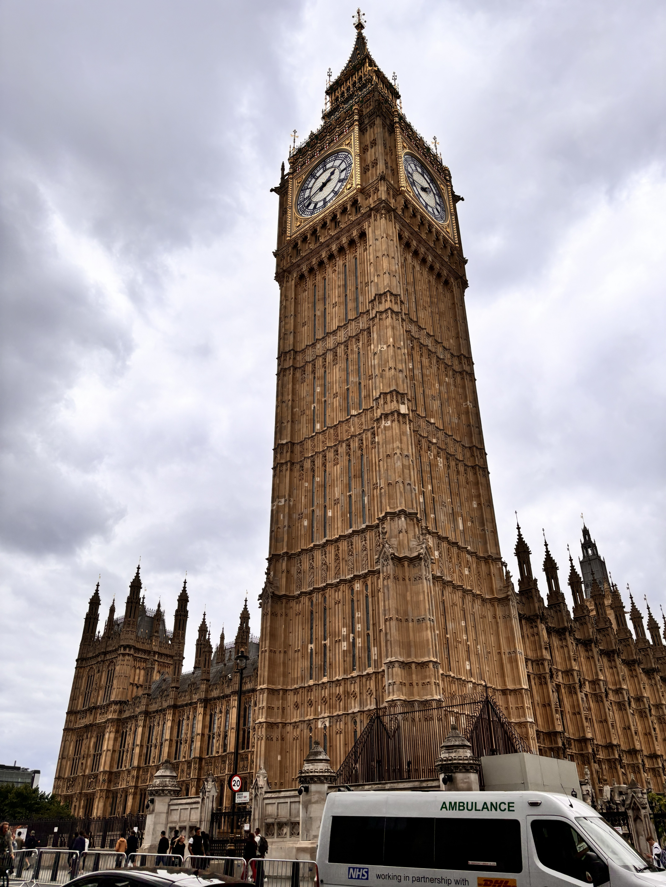
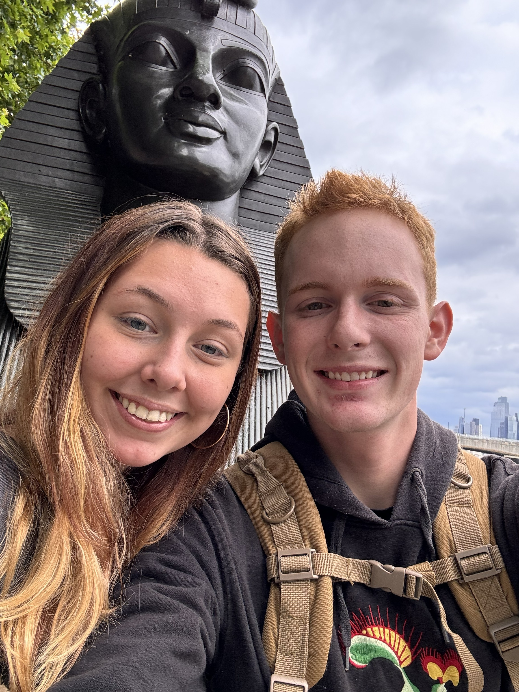
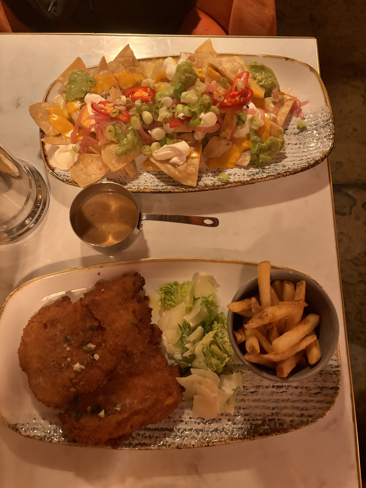
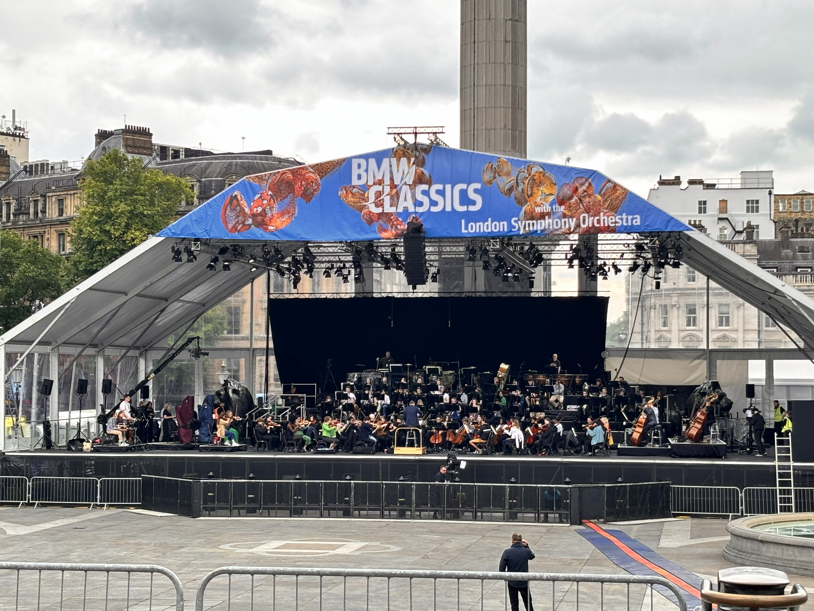
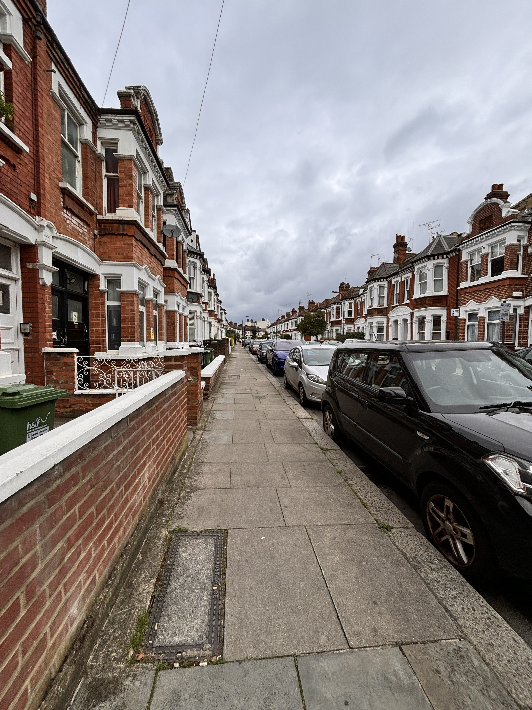
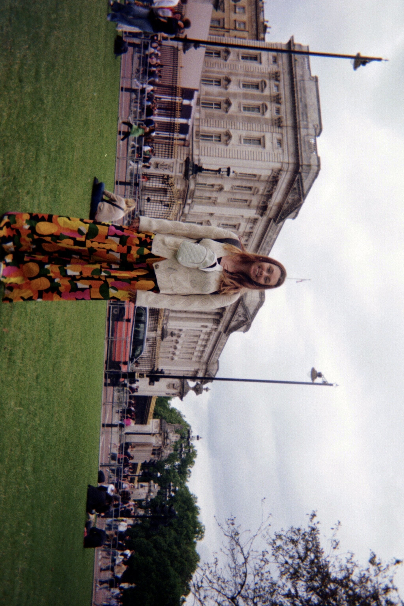
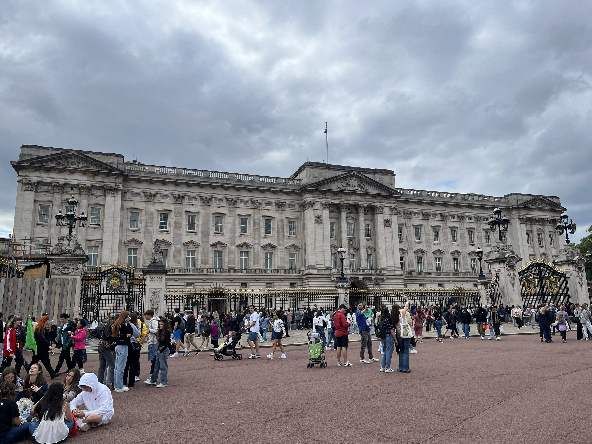
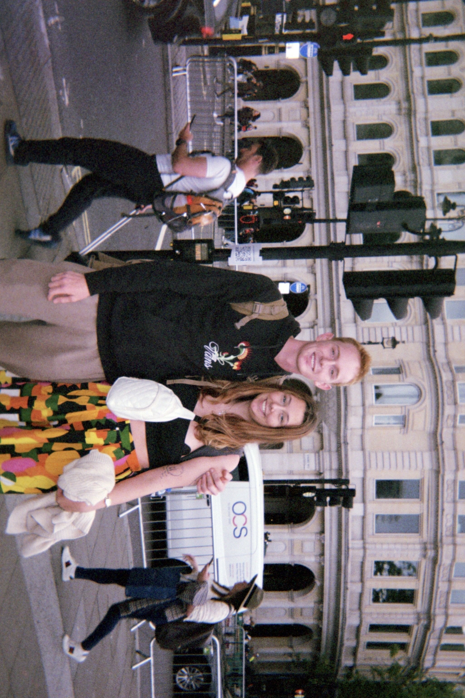
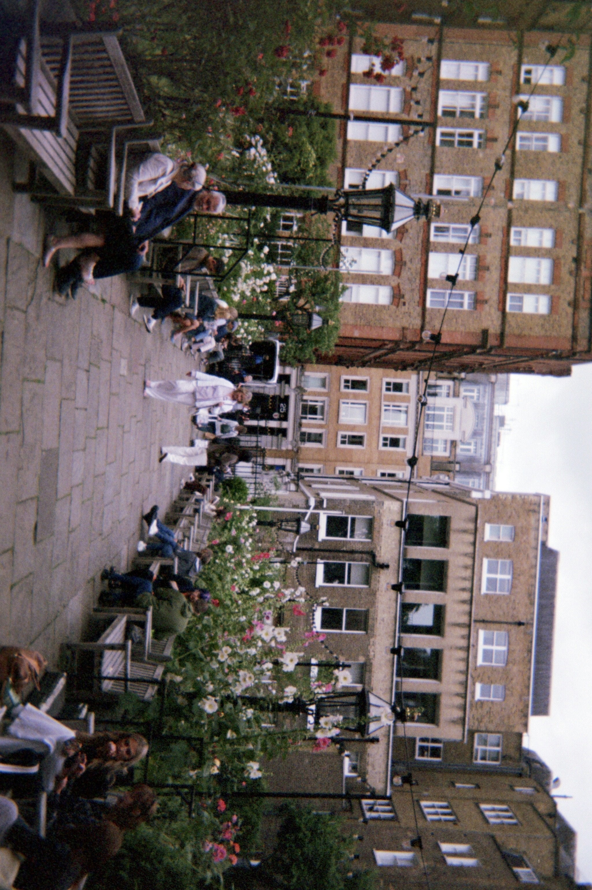

The quick snapshot
Stay details
Hotel / Airbnb
Link: https://www.airbnb.com/rooms/1189939387184736753?guests=1&adults=1&s=67&unique_share_id=d6a69307-84f1-4dba-89d7-eba6c0618e5b
Area: Shepherd’s Bush / Hammersmith
What I liked: All we needed was a place to put our bodies and our bags for one night. It was an adorable place with quite a bit of room. I assumed London would have shoe box sized apartments, New York Style, but this one was plenty big enough for us. My Arkansas eyes couldn't get enough of the sight of those cute London houses and the orderly streets.
What I didn’t: It should be noted that it took us nearly three hours to arrive at this airbnb from the Heathrow airport. Whether that was due to a scam artist taxi driver (we made it easy for him by falling asleep the moment we stepped into the cab) or a genuine disconnect between time and space continuum that night, we will never know.
Booking notes
- Price: $108.86
- Best for: A quick London stop where you plan to spend most of your time out exploring. It didn't take us a terribly long time to get to the actual city area walking and it was a brilliant little stroll.
- Good to know: Beware of the taxi drivers
- Overall: A solid place to land for a very full city day
Getting there
Travel: Flew in from the Netherlands
Travel cost: $22.00 per person, $44.00 total USD
Rental car: None
Arrival notes: The subway itself was easy to use, and the airport shuttle buses made it fun to see the houses and surrounding areas on the way in. We had no issues coming in as Americans, although this was 2024. Always check the current rules and regulations when traveling.
Recommendation: Yes. The flight was short and simple, and I really loved using the subway once we were actually moving around the city. We definitely want to go back whenever time allows! There were so many beautiful quirks to the city. The Harry Potter store, the candy shops, Big Ben, Buckinham Palace, strolling through the city, the London Eye, the shopping centers, listening to the London Opera practice. I could go on for days. I truly loved this city and, atleast for Americans, it was a really easy place to get around and do what we wanted to do.

Big Ben!!! We walked right out of the subway and there he was.

Sphinx Statue Selfie

Still dreaming about this London lunch.

Magical Harry Potter Mirror

We just stumbled upon the London Symphony Orchestra practicing! Such a beautiful sound.

Morning stroll to get donuts

Buckingham palace!

Buckingham palace pt II!

A sweet lady took this for us on our disposable film camera. It ended up being one of my favorite photos from the whole trip.

Film camera capture of the view from Rose's eyes.
Where we ate and what we ordered
Morning start
Pub stop
Food notes to remember
- Krispy Kreme (the one in the mall near where we stayed) either opened oddly late for a donut shop, or was unnatteneded for a large portion of the morning. There is a lego store about 20 feet away to kill some time, though.
- Don't underestimate what a good pub meal can do for you after hours of walking.
- Although there are a million reviews of a million London restaurants online, we really enjoyed stopping where the food smelled good from outside rather than chasing one flashy restaurant.
Overall food take
Between the donuts, the pub food, and the general rhythm of the day, London felt delicious in an easy way. While I think London could use some queso and BBQ, I think we could use some Chicken Kyiv.
What we did, day by day
Day 1
Date: July 12, 2024
Main plan: Arrive in London, somehow survive the very long trek to the Airbnb, and crash as soon as we got there. Unfortunately, this included the taxi driver yelling at me to get out of the car more quickly while I was searching for the birkenstock that had fallen out of the side pocket of my bag. I still miss that shoe.
Best part: Honestly, just finally making it to the Airbnb after that bizarre taxi ride and knowing the real exploring could start the next morning.
Worth repeating? The city, yes. The taxi situation, no.
Day 2
Date: July 13, 2024
Main plan: Wake up early, throw our backpacks on, and walk through as much of London as we could — including Trafalgar Square, Big Ben, Buckingham Palace, and everything in between.
Best part: The whole day. Every stretch of it felt packed with little surprises — a magic show, the opera, a sphinx statue, red buses, the Harry Potter store, and then all the major landmarks layered on top.
Worth repeating? Completely
Little moments I do not want to forget
Memory: Watching the guards at Buckingham Palace, seeing Big Ben in person, and just continuing to wander as the day rolled into evening.
Why it mattered: Strangely enough, even through all of the exploring we did, London was refreshing. It probably has something to do with my life long love affair with Doctor Who. I don't care. It was magical.
Worth keeping? Always